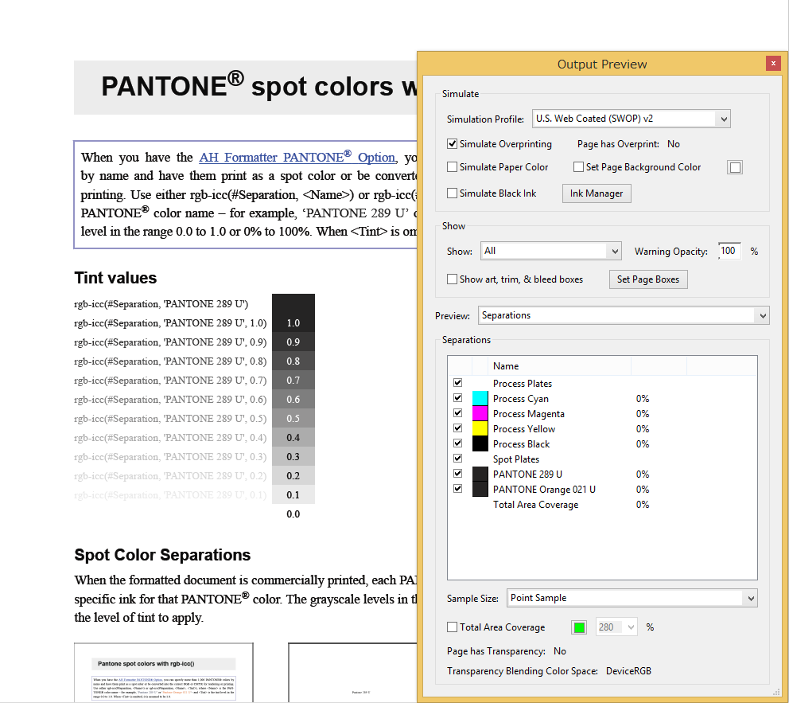
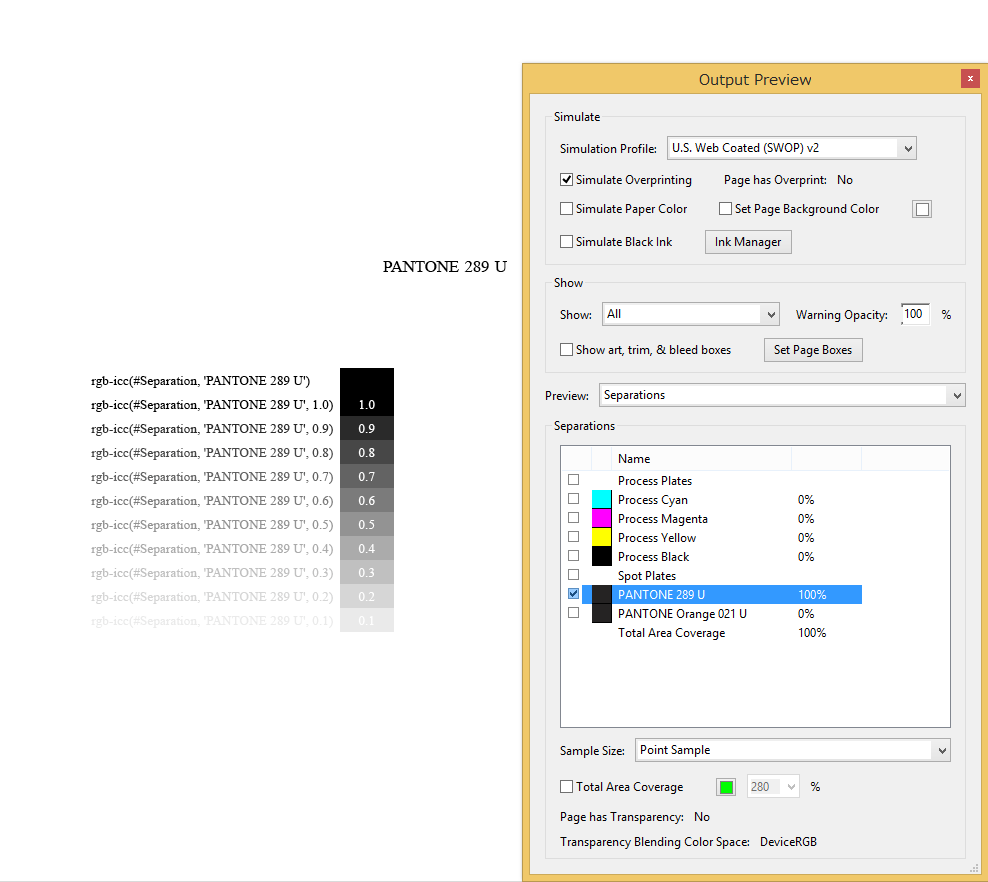
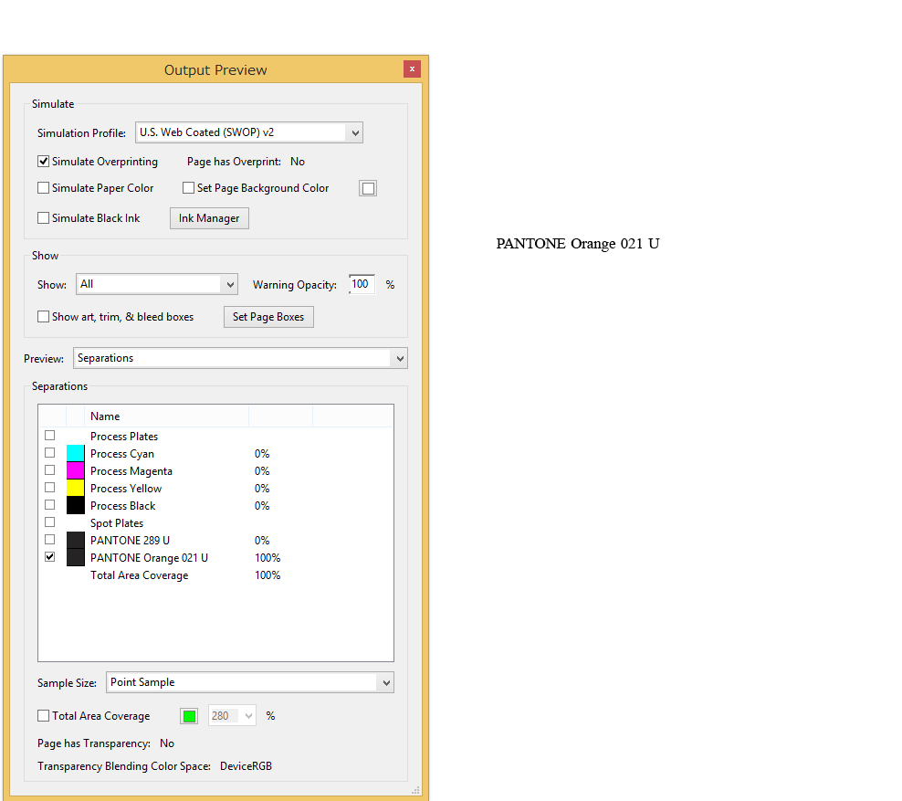

| rgb-icc(#Separation, 'PANTONE 289 U') | |
| rgb-icc(#Separation, 'PANTONE 289 U', 1.0) | 1.0 |
| rgb-icc(#Separation, 'PANTONE 289 U', 0.9) | 0.9 |
| rgb-icc(#Separation, 'PANTONE 289 U', 0.8) | 0.8 |
| rgb-icc(#Separation, 'PANTONE 289 U', 0.7) | 0.7 |
| rgb-icc(#Separation, 'PANTONE 289 U', 0.6) | 0.6 |
| rgb-icc(#Separation, 'PANTONE 289 U', 0.5) | 0.5 |
| rgb-icc(#Separation, 'PANTONE 289 U', 0.4) | 0.4 |
| rgb-icc(#Separation, 'PANTONE 289 U', 0.3) | 0.3 |
| rgb-icc(#Separation, 'PANTONE 289 U', 0.2) | 0.2 |
| rgb-icc(#Separation, 'PANTONE 289 U', 0.1) | 0.1 |
| rgb-icc(#Separation, 'PANTONE 289 U', 0.0) | 0.0 |
|

|

|

|